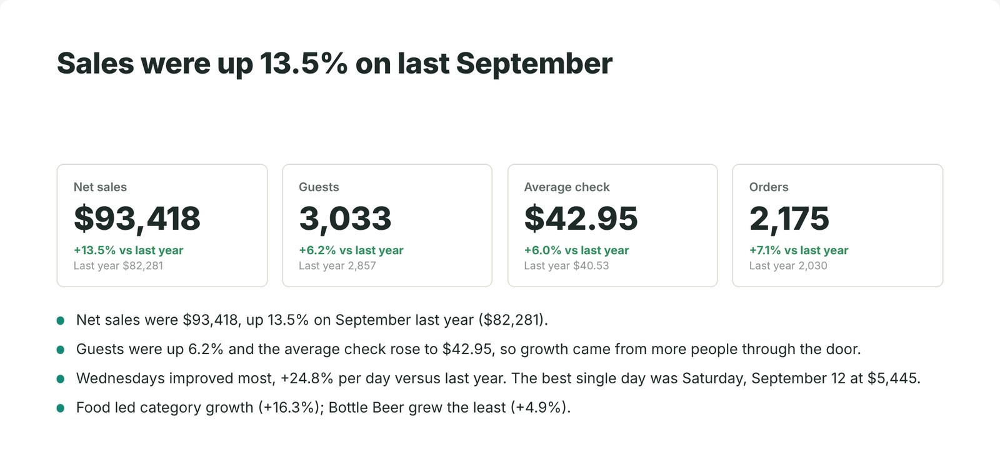
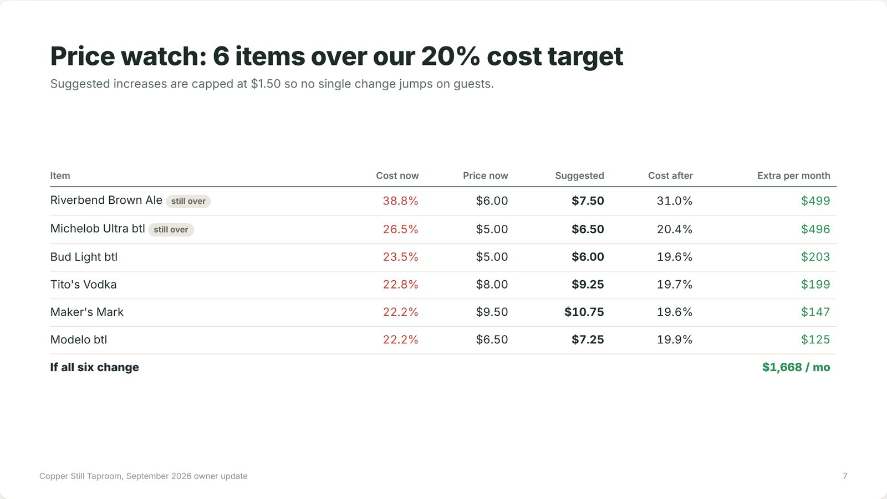
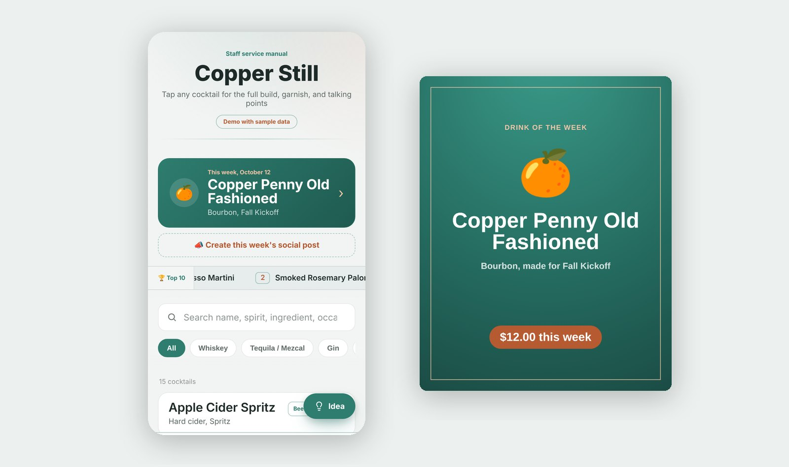
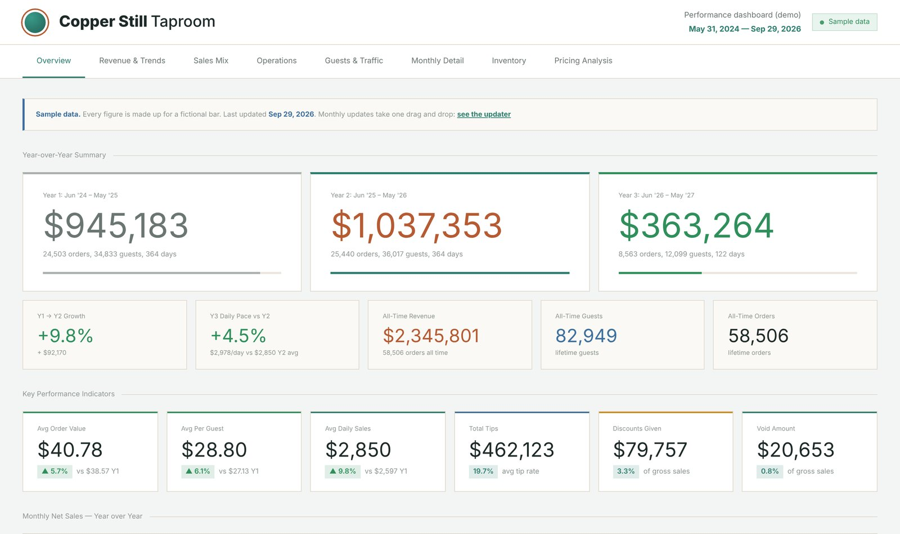
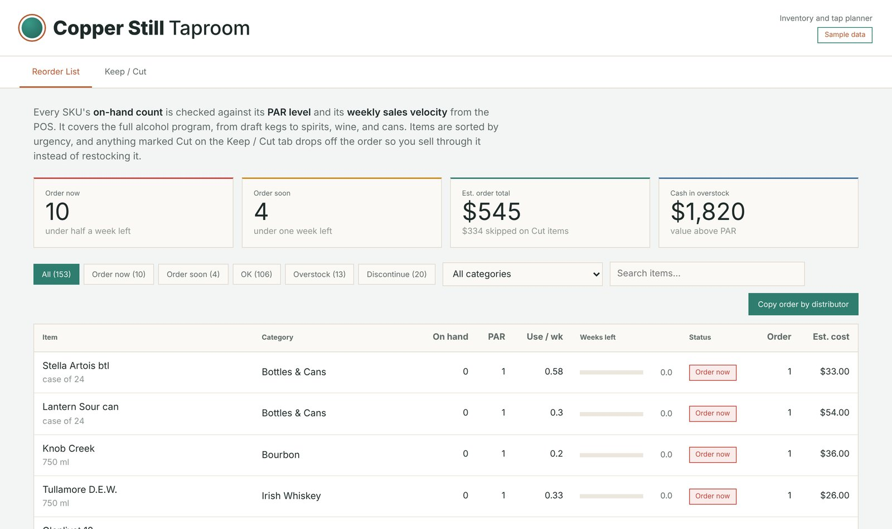

Ten years behind the bar. Now I build the tools I wished I had.
I set up the monthly reporting and weekly drink posts your managers make by hand, so they build themselves from your POS. Your team reviews them instead of making them.

What comes off your plate
Three jobs that eat a manager's month. Each is set up once around how you already report, then runs on its own.
| Task | What you get | Before | After |
|---|---|---|---|
Monthly owner deck | Sales against last year, top sellers, and the items running over your cost target, laid out the way your owners or corporate want it. Add a note and send. | 3 hrs | 10 min |
Weekly drink posts | Snap a photo of the drink at your bar and get a ready-to-post carousel and caption, written from your own recipe and checked against Georgia's alcohol ad rules. | 3 hrs | 20 min |
Sales against last year | Every day, week, and month compared to the same period last year, readable on a phone. No pivot tables. | 2 hrs | 0 |
| Each month | 8 hrs | 30 min |
Times are from my own bar. We'll work out yours on the first call.
See it on a sample bar
Each demo runs on made-up numbers for a fictional taproom, so you can click around freely.

Monthly owner deck
Pick a month and eight slides build themselves, from sales against last year to a list of prices worth raising. Save it as a PDF or copy an email summary.
Open the deck demo
Drink of the Week app and posts
Staff see the weekly feature, full specs, and talking points on their phones. One tap turns the feature into a post for Instagram, Facebook, or Stories.
Open the app demo
Sales dashboard
This year against last year, the sales mix, guest traffic, and which items cost you margin. Updated by dropping in the month's POS reports.
Open the dashboard demo
Reorder and keep-or-cut planner
What to order this week, sorted by what runs out first, and which beers, spirits, and wines have earned their spot.
Open the planner demoHow it works
A free 20-minute call
We look at how you report today, what your owners ask for, and which POS reports you can already pull.
Two to three weeks of setup
I build everything in your own Google account around the layouts your team already knows. You approve each piece.
It runs on its own
Reports refresh from your POS and your weekly post is ready to approve. I keep it running and make small changes as you need them.
Questions GMs ask
Is it automated, or am I still exporting reports?
Where your POS can send data on a schedule, everything updates overnight on its own. Where it can't, it's one drag and drop at the start of the month, about two minutes. We'll check what your setup supports on the first call, before you pay for anything.
How is this different from the reports my POS already gives me?
Your POS tells you what happened. This compares it to last year, points out which items are costing you margin, and puts it in the deck your owners actually read. It's the part you're doing by hand in a spreadsheet today.
We already pay for inventory software. Is this a replacement?
No, keep it. Inventory apps are great at counting and invoices. I take what it and your POS produce and turn it into decisions, decks, and posts.
What if you get busy or disappear?
Everything lives in your own accounts and you own all of it. Every piece comes with written instructions, so nothing stops working if I'm not around.
Are the drink posts legal to run in Georgia?
Captions and slides leave out pour sizes and alcohol content, and every post is checked for coupons and timed specials before you approve it. Local rules vary, so we confirm what your city or county allows during setup.
About me
By day I work in supply chain analytics for a Fortune 500 company, managing field inventory for the construction crews that build cell towers. Keeping the right materials in the right place, and reporting on it so leadership can act, is the whole job.
I've also managed bars for ten years and still run the back office at a craft beer and cocktail bar in Marietta: inventory, pricing, the cocktail program, and the monthly reports to ownership.
That mix is the point. A bar is a small supply chain: product comes in, gets poured, and every keg and bottle has to earn its spot. I bring the same inventory and reporting discipline a Fortune 500 company runs on, sized for a single bar.
Book a 20-minute call
Tell me what's eating your week. If I can't save you real time, I'll say so on the call.
- sobie275@gmail.com
- linkedin.com/in/b-e-herring
- Based in
- Marietta, Georgia